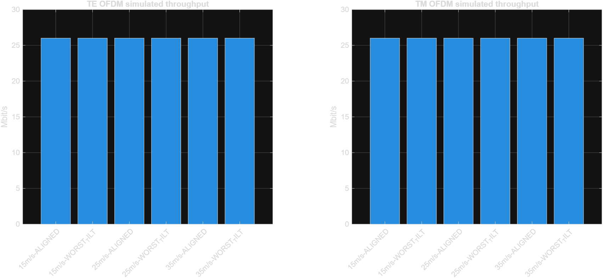
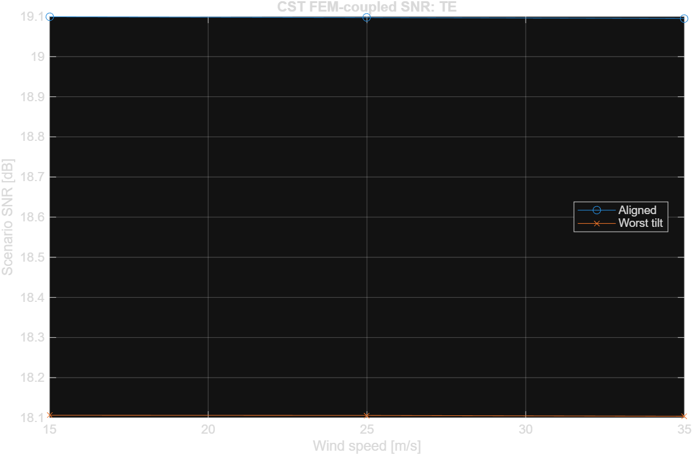

Gerçek CST native FEM-RF: 150/150; MATLAB OFDM: 13 koşul
| Wind_m_s | Mesh | MaxDisp_mm | MaxMises_MPa | MeshMinQuality | PreviousToCurrent_DispChangePct | PreviousToCurrent_StressChangePct |
|---|---|---|---|---|---|---|
| 15 | 7 | 0.038032506 | 5.247483364 | 0.00001 | nan | nan |
| 15 | 6 | 0.050418816 | 7.120265029 | 0.00329 | 24.56684 | 26.30213 |
| 15 | 5 | 0.053928798 | 6.935151066 | 0.00041 | 6.50855 | 2.66921 |
| 15 | 4 | 0.153042762 | 9.720235737 | 0.00449 | 64.76227 | 28.65244 |
| 25 | 7 | 0.105645850 | 14.576343862 | 0.00001 | nan | nan |
| 25 | 6 | 0.140052266 | 19.778513885 | 0.00329 | 24.56684 | 26.30213 |
| 25 | 5 | 0.149802218 | 19.264308493 | 0.00041 | 6.50855 | 2.66921 |
| 25 | 4 | 0.425118782 | 27.000654762 | 0.00449 | 64.76227 | 28.65244 |
| 35 | 7 | 0.207065869 | 28.569635623 | 0.00001 | nan | nan |
| 35 | 6 | 0.274502441 | 38.765887209 | 0.00329 | 24.56684 | 26.30212 |
| 35 | 5 | 0.293612347 | 37.758044680 | 0.00041 | 6.50855 | 2.66921 |
| 35 | 4 | 0.833232819 | 52.921283354 | 0.00449 | 64.76227 | 28.65244 |
| Wind_m_s | Pol | N_cases | Nominal_Pr_dBm | Worst_Pr_dBm | Worst_AX_deg | Worst_AY_deg | Worst_SNR_dB |
|---|---|---|---|---|---|---|---|
| 15 | TE | 25 | -74.8904183 | -75.8834231 | -0.2 | 0.2 | 18.106277 |
| 15 | TM | 25 | -74.9058516 | -75.897457 | -0.2 | -0.2 | 18.0922431 |
| 25 | TE | 25 | -74.8923712 | -75.8838523 | -0.2 | 0.2 | 18.1058478 |
| 25 | TM | 25 | -74.9055319 | -75.898279 | -0.2 | -0.2 | 18.0914211 |
| 35 | TE | 25 | -74.8946478 | -75.8858271 | -0.2 | 0.2 | 18.103873 |
| 35 | TM | 25 | -74.9470267 | -75.9011103 | -0.2 | -0.2 | 18.0885897 |
| Wind_m_s | Pol | Scenario | SNR_dB | BER | PER | Net_Mbps |
|---|---|---|---|---|---|---|
| 15 | TE | ALIGNED | 19.0992818 | 0 | 0 | 26 |
| 15 | TE | WORST_TILT | 18.106277 | 0 | 0 | 26 |
| 15 | TM | ALIGNED | 19.0838485 | 0 | 0 | 26 |
| 15 | TM | WORST_TILT | 18.0922431 | 0 | 0 | 26 |
| 25 | TE | ALIGNED | 19.0973289 | 0 | 0 | 26 |
| 25 | TE | WORST_TILT | 18.1058478 | 0 | 0 | 26 |
| 25 | TM | ALIGNED | 19.0841682 | 0 | 0 | 26 |
| 25 | TM | WORST_TILT | 18.0914211 | 0 | 0 | 26 |
| 35 | TE | ALIGNED | 19.0950523 | 0 | 0 | 26 |
| 35 | TE | WORST_TILT | 18.103873 | 0 | 0 | 26 |
| 35 | TM | ALIGNED | 19.0426733 | 0 | 0 | 26 |
| 35 | TM | WORST_TILT | 18.0885897 | 0 | 0 | 26 |
| 0 | NA | NO_REFLECTOR_BLOCKED_LOS | NaN | 0.498554258241758 | 1 | 0 |

